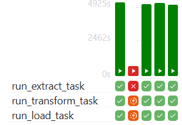
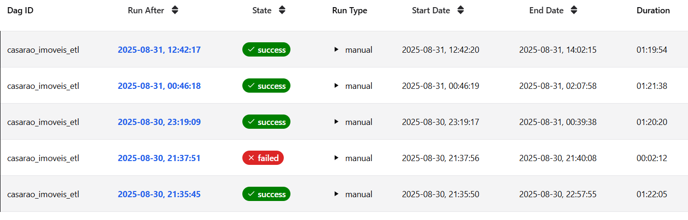

Orquestração com Apache Airflow¶
Toda a pipeline de web scraping é orquestrada utilizando o Apache Airflow. Isso garante que a coleta, transformação e carga dos dados sejam executadas de forma controlada e resiliente.
Contexto de Execução: Astro CLI¶
Para o desenvolvimento e execução local, este projeto utiliza o Astro CLI. Esta ferramenta simplifica o gerenciamento do ambiente Airflow via Docker, permitindo que a DAG seja iniciada e testada facilmente. Para mais detalhes sobre a configuração, consulte a seção Setup do Projeto.
Visão Geral da DAG¶
A orquestração é controlada por uma única DAG (Directed Acyclic Graph) que define o fluxo de trabalho completo.
- ID da DAG:
casarao_imoveis_etl - Agendamento (Schedule): Atualmente, a DAG está configurada para ser executada apenas manualmente (
schedule=None). Para agendar uma execução automática (por exemplo, diária), o parâmetroscheduleno código da DAG pode ser alterado.- Exemplo para execução diária às 03:00 UTC:
schedule="0 3 * * *"
- Exemplo para execução diária às 03:00 UTC:
- Tags: A DAG é categorizada com as seguintes tags para facilitar a busca na interface do Airflow:
web_scraper_casarao_imoveis,transform_casarao_imoveis_data,load_casarao_imoveis_data.
Estrutura e Tarefas do Pipeline¶
O pipeline é dividido em três tarefas principais, seguindo o padrão ETL. O fluxo de dependências garante que uma tarefa só inicie após o sucesso da anterior.
Diagrama de Fluxo¶
graph TD;
A[Start] --> B(run_extract_task);
B --> C{run_transform_task};
C --> D[run_load_task];
D --> E[End];
Detalhamento das Tarefas¶
-
run_extract_task(Extração)- Responsabilidade: Esta tarefa é responsável por iniciar o navegador com Selenium, navegar até o site da Casarão Imóveis, realizar a rolagem infinita para carregar todos os cards e extrair os dados brutos de cada imóvel.
- Saída: Um arquivo JSON contendo uma lista de todos os imóveis coletados. Este arquivo é a fonte de dados para a próxima etapa.
-
run_transform_task(Transformação)- Responsabilidade: Lê o arquivo JSON gerado pela tarefa de extração. Realiza a limpeza e a padronização dos dados (ex: remove "R$", converte tipos, trata valores nulos, padroniza abreviações de endereços) e estrutura as informações em um formato final.
- Saída: Um novo arquivo JSON com os dados limpos e estruturados, pronto para ser carregado no banco de dados.
-
run_load_task(Carga)- Responsabilidade: Pega o arquivo JSON com os dados limpos da etapa de transformação e o carrega na tabela
imoveisno banco de dados PostgreSQL. - Conexão com o Banco: A lógica de conexão com o PostgreSQL é gerenciada dentro do código desta tarefa. !!! tip "Boa Prática" Para aumentar a segurança e a flexibilidade, é recomendado gerenciar credenciais de banco de dados através das Conexões (Connections) do Airflow, em vez de mantê-las em arquivos de configuração ou no código.
- Responsabilidade: Pega o arquivo JSON com os dados limpos da etapa de transformação e o carrega na tabela
Monitoramento e Logs¶
Para verificar a execução de uma DAG, depurar um erro ou analisar o desempenho, a interface do Airflow fornece ferramentas visuais e logs detalhados.
- Acesse a interface do Airflow (
http://localhost:8080). - Clique na DAG
casarao_imoveis_etl.
A visualização "Grid" é a ferramenta principal para o monitoramento. Ela permite acompanhar o histórico das execuções da DAG e analisar a duração de cada tarefa individualmente.
 
Na imagem acima, podemos observar as últimas execuções da DAG, com destaque para o status de cada tarefa (run_extract_task, run_transform_task, run_load_task) e a duração de cada etapa. Esta visão é essencial para identificar padrões de performance, gargalos, e garantir que o pipeline esteja operando dentro dos tempos esperados.
- Para ver os logs detalhados de uma tarefa específica em uma execução, clique no quadrado correspondente e, em seguida, na aba "Log".